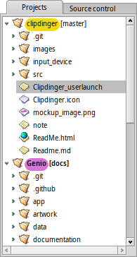
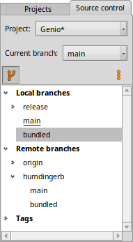
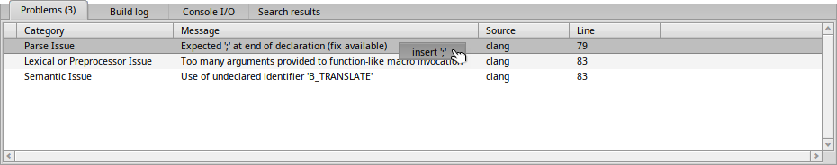
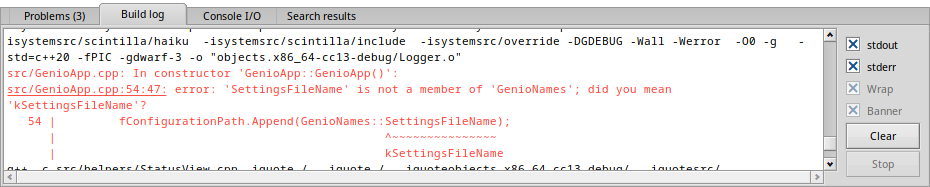
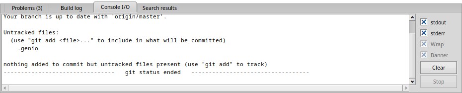
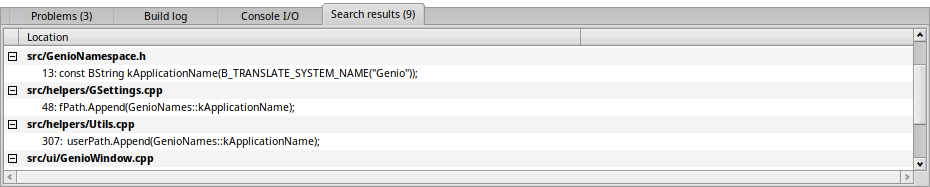

The Panes
Genio's main window contains two panes besides the toolbar and the editor view: The "Projects" pane on the left and the "Output" pane at the bottom. They can be toggled on and off with the first two icons in the toolbar, or with the menu .
The "Projects" pane
The "Projects" pane holds two tabs: the first to manage the files and folders of open projects, the second to manage source control related issues.
Projects

You can have multiple projects open at the same time, but only one can be "active". This is indicated by a bolded project name.
Commands like or a search in the whole project work only on the currently active project. A project can be from the context menu when right-clicking it.
The context menu provides more commands to manage your project, depending on what item it was invoked on. Right-clicking the project name (= top folder), let's you build your project, close it, open its Project settings, add new files from templates or open its folder in Tracker, among other things.
A right-click on files or folders inside the project allows you to rename, delete or open a file with its preferred application, etc.
Double-clicking a file opens it in the editor view.
Source control

In this tab you find most often needed actions to interact with your git repository. It also shows the structure of your repository; your local and remote branches, forks and tags.
You switch to a different branch with a double-click, or by choosing from the menu.
A right-click on a branch opens a context menu to switch, create, rename or delete branches, etc.
With the ⁝ icon at the right above the list, you can execute several git commands like fetch or stash or apply stashed changes.
If there isn't a git repository already, Genio offers you to .
The "Output" pane
The "Output" pane consists of four tabs: , the , the and .
Problems

Clang is continuously analyzing the current file in the editor view and reports any problems it thinks it has found. Sometimes those are false positives and can be ignored. Often it's very helpful, however, to spot typos or missing commas etc.
A right-click on a row offers to fix the issue.
Build log

When you're building your project, the "Build log" tab pops up, showing the build process.
Warnings and errors are printed in red, showing in which file, on what line and column the error was encountered. Click on it, and you're transported right to it.
The buttons on the right the log or the running process.
The checkboxes above them de/activate and . You can long lines, and de/activate the which prints the executed command at the start and end of the build process.
Console I/O

If you execute a command from the menu, like git status, or choose to or from the Toolbar, its output will appear in the "Console I/O" tab.
The buttons and checkboxes do the same as described above for the "Build log".
Search results

If you click the icon in the Find bar, this tab will show all the hits from all files of the currently active project. Double-click to jump to the search result.
Back: Editor Next: Toolbar